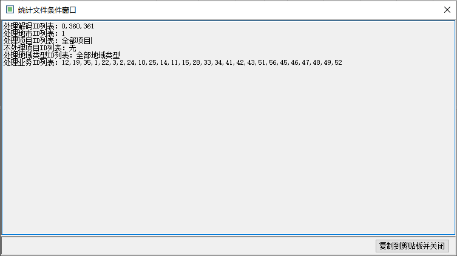

4G kpi 统计程序的数据来源是 Stat 目录（解码配置的Stat路径）下的 .sam 文件
此路径下的 .sam 文件可以定期清理。
说明：
由上图可以看到，软件信息包括了：软件路径，是否读取 .sam 文件，栅格大小，三种信息
菜单栏总共有三项：工具、帮助和功能。
工具中有三个子项：选项、导出配置信息、重启。目前只有重启是有用的，其它功能废除。
帮助中有两项：使用帮助、关于。都没有功能。
功能中有四项：DES加密、DES解密、查找统计文件范围、查看是否存在冲突。其中DES加解密由于使用的key不一样，所以无用。
其中查看是否存在冲突功能可以比对多个软件的配置文件，即 .config 文件，可以检查两个软件配置文件是否配置冲突了。
而查找统计文件范围功能则会输出当前软件配置的统计条件到界面！如下所示：
可以通过对个别文件进行筛选统计。条件包含了地市，文件ID两种信息。 其它条件继承配置文件的。写好条件后，点击开始查询按钮，如果有查到，那么会显示在文件列表中。 此时按钮显示有开始查询变化为开始统计，点击开始统计就可以了。
点击立即开始按钮，程序就会循环每个地市和每个地市网络类型进行查询文件统计。
状态栏显示程序的启动时间，执行次数，已经统计文件的总数量，统计失败的数量，剩余待统计文件的数量，当前处理的地市，以及实时内存占用情况。
部署多个的情况下，不用修改软件原始名字，只要软件ID配置不同就可以！另外，每个的统计条件要互斥！！
配置文件名为：GridStat_IMAGE.exe.config，路径为程序目录的文件夹中,，内容如下：
配置项很多，以下为需要掌握的配置项
| 名称 | 说明 |
|---|---|
| DBNum | 地市库个数，大部分省份都是有多个地市库的，多地市库的需要配置具体的地市库数量。 |
| DTASYSTEMConnectionStringdb | 数据库连接字符串，此配置有30个，根据DBNum个数按顺序填写。 |
| DealProjectList | 需要统计的项目类型，多个时用逗号分开，不写默认为全部都统计。 |
| NotDealProjectList | 不需要处理的项目类型，多个时用逗号分开，不写默认为没有。 |
| DealAreaTypeList | 需要统计的地域类型列表，多个时用逗号分开，不写默认为全部都统计。 |
| HandleServiceTypeIds | 需要统计的业务类型列表，多个时用逗号分开，不写默认为全部都统计。 |
| SkipServiceTypeIds | 不需要统计的业务类型，多个时用逗号分开，不写默认为没有。 |
| GridStat_GSM | 需要统计的网络类型开关，1：打开 0：关闭 |
| GridStat_CDMA | |
| GridStat_CDMA2000 | |
| GridStat_TDSCDMA | |
| GridStat_WCDMA | |
| GridStat_LTE | |
| GridStat_LTEFDD | |
| GridStat_SCAN | |
| GridStat_WLAN | |
| DealExeIDList | 解码ID列表，即统计哪个解码解析的文件。多个时用逗号分开，不写默认为全部都统计。 |
| ApplicationID | 软件自己的ID，部署多个时，需要与其它统计程序的ID互斥。 |
| StatMonthsAppend | 统计的时间范围，即在这个时间范围内的文件才会被统计到。 |
| StatType | 统计类型，即文件当前状态在统计类型中的，才会被统计到。 |
| TENGRID_30_30 | 栅格大小，除这两个外，如果这两个都不打开的话，就是 40 x 40 的栅格。 |
| TENGRID_100_100 | |
| StatMethod_Log | 统计维度开关。文件纬度、小区维度、栅格维度、小区栅格维度。 |
| StatMethod_Cell | |
| StatMethod_Grid | |
| StatMethod_CellGrid | |
| SamFilesDir | sam文件路径，解码程序的 Stat 路径。 |
| DealCitys | 需要处理的地市ID列表，多个时用逗号分开，不写默认为全部都统计。 |
这种原因基本就是内存不够用导致的，即内存被其它程序吃掉了，导致剩余的内存不够分配给统计程序使用。统计程序一直等待分配内存。
原因一般为，要统计的文件和当前使用的统计程序条件不符。
在分流的时候，可以根据上述的 项目类型，解码ID，业务类型，等进行设置。
往事如歌，在人生的旅途中，尽管有过坎坷，有过遗憾，却没有失去青春的美丽。相信自己，希望总是有的，让我们记住那句话：错过了太阳，我不哭泣，否则，我将错过月亮和星辰。